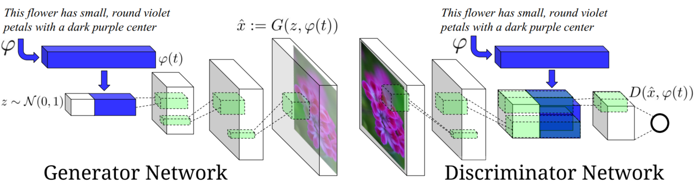

<!DOCTYPE html>
<html lang="en">

<head>
  <meta charset="utf-8" />
    
  <meta name="description" content="Bowen&#39;s Blog" />
  
  <meta name="viewport" content="width=device-width, initial-scale=1, maximum-scale=1" />
  <title>
    Neural Style Transfer Review IV |  Bowen&#39;s Blog
  </title>
  <meta name="generator" content="hexo-theme-yilia-plus">
  
  <link rel="shortcut icon" href="/logo.ico" />
  
  
<link rel="stylesheet" href="/css/main.css">

  
  <script src="https://cdn.jsdelivr.net/npm/pace-js@1.0.2/pace.min.js"></script>
  
  

  

<link rel="alternate" href="/atom.xml" title="Bowen's Blog" type="application/atom+xml">
</head>

</html>

<body>
  <div id="app">
    <main class="content">
      <section class="outer">
  <article id="post-Neural-Style-Transfer-Review-IV" class="article article-type-post" itemscope
  itemprop="blogPost" data-scroll-reveal>

  <div class="article-inner">
    
    <header class="article-header">
       
<h1 class="article-title sea-center" style="border-left:0" itemprop="name">
  Neural Style Transfer Review IV
</h1>
  

    </header>
    

    
    <div class="article-meta">
      <a href="/2020/04/19/Neural-Style-Transfer-Review-IV/" class="article-date">
  <time datetime="2020-04-19T12:27:03.000Z" itemprop="datePublished">2020-04-19</time>
</a>
      
  <div class="article-category">
    <a class="article-category-link" href="/categories/Review/">Review</a>
  </div>

      
      
<div class="word_count">
    <span class="post-time">
        <span class="post-meta-item-icon">
            <i class="ri-quill-pen-line"></i>
            <span class="post-meta-item-text"> 字数统计:</span>
            <span class="post-count">4.5k字</span>
        </span>
    </span>

    <span class="post-time">
        &nbsp; | &nbsp;
        <span class="post-meta-item-icon">
            <i class="ri-book-open-line"></i>
            <span class="post-meta-item-text"> 阅读时长≈</span>
            <span class="post-count">17分钟</span>
        </span>
    </span>
</div>

      
    </div>
    

    
    
    <div class="tocbot"></div>


    

    
    <div class="article-entry" itemprop="articleBody">
      
      

      
      <h1 id="Neural-Style-Transfer-Review-IV"><a href="#Neural-Style-Transfer-Review-IV" class="headerlink" title="Neural Style Transfer Review IV"></a>Neural Style Transfer Review IV</h1><h2 id="数据集"><a href="#数据集" class="headerlink" title="数据集"></a>数据集</h2><h3 id="Flickr-30k"><a href="#Flickr-30k" class="headerlink" title="Flickr 30k"></a>Flickr 30k</h3><p>30k 图片，每张图片 5 句标注，并且和图中的实体有对应关系。但像 “outside, parade” 这样的场景或者事件信息没有对应的实体标注。</p>
<h3 id="MS-COCO"><a href="#MS-COCO" class="headerlink" title="MS COCO"></a>MS COCO</h3><p>200k 有标注，每个图片 5 句标注，但多是以物体为主。</p>
<h3 id="Google’s-Conceptual-Captions"><a href="#Google’s-Conceptual-Captions" class="headerlink" title="Google’s Conceptual Captions"></a>Google’s Conceptual Captions</h3><p>使用互联网上带有 Alt-text HTML 标签的图片，做一定的预处理之后得到 3M 图片</p>
<a id="more"></a>
<h2 id="Photorealistic-Style-Transfer"><a href="#Photorealistic-Style-Transfer" class="headerlink" title="Photorealistic Style Transfer"></a>Photorealistic Style Transfer</h2><h3 id="Controlling-Perceptual-Factors"><a href="#Controlling-Perceptual-Factors" class="headerlink" title="Controlling Perceptual Factors"></a>Controlling Perceptual Factors</h3><p>Gatys et al. CVPR 2017.</p>
<p>之前的风格迁移很难控制或者预测视觉感受，作者提出的方法可以对转换的结果进行更加细致的控制和预测，以达到更好的视觉效果。</p>
<h4 id="空间控制"><a href="#空间控制" class="headerlink" title="空间控制"></a>空间控制</h4><p>通过使用“空间指导通道”，也就是 MASK 来控制风格迁移的区域或者实现整张图片结合不同的风格， content mask 中为 1 的区域将会得到对应 style mask 中为 1 区域的风格。</p>
<p>可以通过 mask 乘对应的 feature map 实现需要的结果。对于不同 layer 中使用的 mask，可以通过下采样的方式得到，但效果不好。作者实验发现使用腐蚀操作能得到更好的效果。</p>
<h4 id="颜色控制"><a href="#颜色控制" class="headerlink" title="颜色控制"></a>颜色控制</h4><p>图片中的颜色信息相对笔锋大小或者几何形状等信息比较独立，所以能够做到相对独立地在迁移过程中控制颜色信息。有些时候我们仅仅希望内容图片得到风格图片的纹理特征而不引入颜色分布（例如风格图片是一张夜景图片，我们仅仅希望内容图片得到纹理而不会整张图片都变成夜景）。</p>
<p>由于人的眼睛对亮度的敏感性大于色彩，一种方案是使用亮度与色彩信息分离的颜色空间，使用原来的风格迁移算法作用于亮度，得到新亮度再加原色彩得到迁移之后的风格。</p>
<p>第二种方法是先对风格图片和内容图片进行直方图匹配，这里使用线性变换 $p_s^{‘} = Ap_s+b$，目标是新的风格图片的像素均值方差等于风格图片，之后用这张新的风格图片进行迁移。</p>
<h4 id="尺度控制"><a href="#尺度控制" class="headerlink" title="尺度控制"></a>尺度控制</h4><p>有的时候希望在粗粒度上使用一种风格，在细粒度上使用另一种风格。此时不能简单地使用不同尺度的 CNN feature（高层次的 CNN feature 包含了一部分低层次的语义）。作者提出了建立新的风格图片，这是由粗粒度风格作为内容图片，细粒度风格作为风格图片先做一次风格迁移得到新风格，再用这个新风格和内容图片做一次风格迁移得到的。</p>
<p>在高分辨率下的迁移。高分辨率下也希望得到比较明显的风格迁移结果，作者发现使用 VGG-19 网络效果最好的输入大小在 500<em>500 像素左右，对于高分辨率的效果不好。于是作者选择先将高分辨率的图片下采样至 500\</em>500 像素，再上采样回去，用这样处理的图片进行风格迁移，能够更快收敛并去除一定噪声，会得到较好的效果。</p>
<h4 id="在其他模型上的应用"><a href="#在其他模型上的应用" class="headerlink" title="在其他模型上的应用"></a>在其他模型上的应用</h4><p>可以将空间控制，颜色控制等加入到前向传播网络的 loss 中，改善这些工作的效果。</p>
<h3 id="Deep-Photo-Style-Transfer"><a href="#Deep-Photo-Style-Transfer" class="headerlink" title="Deep Photo Style Transfer"></a>Deep Photo Style Transfer</h3><p>Luan et al. CVPR 2017.</p>
<p>作者想解决的还是真实照片中的风格迁移问题，希望效果尽量真实，细节符合真实观感。作者的工作基于 Gatys 的慢速风格迁移，在损失函数中加入正则化项（平滑），并且合理使用图像的语义标签进一步提升迁移效果。</p>
<p>平滑操作主要通过希望相同内容邻域之内的像素尽量相似，使用 Matting Laplacian 进行建模：</p>
<script type="math/tex; mode=display">
\mathcal{L}_m = \sum_{c=1}^3V_c[O]^T\mathcal{M}_IV_c[O]</script><p>其中，$V_c[O]$ 是输出图片通道 $c$ 的向量化形式，$\mathcal{M}_I$ 是由输入内容图片计算而来的矩阵。</p>
<p>合理利用语义标签能做到更精确的风格转换，只提取希望区域的风格。作者自己生成了一些风格标签分类，包含常见的场景分类（天空，建筑物，海洋等等），之后使用 Gram 矩阵求风格的时候加入包含语义的 MASK 即可 <em>（具体细节可能得参考代码）</em>。</p>
<p>缺点，基于优化的慢速风格迁移比较慢，内容风格差异较大时迁移效果不好。</p>
<h3 id="A-Closed-form-Solution-to-Photorealistic-Image-Transfer"><a href="#A-Closed-form-Solution-to-Photorealistic-Image-Transfer" class="headerlink" title="A Closed-form Solution to Photorealistic Image Transfer"></a>A Closed-form Solution to Photorealistic Image Transfer</h3><p>Li et al. ECCV 2018.</p>
<p>之前的 neural style transfer 在艺术作品的风格迁移方面表现较好，但是在真实照片中的表现较差，经常出现空间扭曲等不协调的情况。Luan et al. 提出在原有的损失函数上加入正则化项，效果有所改进，但部分细节还是与对应的语义不符。作者提出的方法在效果上和速度上都比 Luan et al. 有很大提升。</p>
<p>主要处理步骤为风格转换+平滑处理。</p>
<p>风格转换部分基于 WCT 算法：</p>
<script type="math/tex; mode=display">\hat{H}_{c}=E_{c} D_{c}^{-\frac{1}{2}} E_{c}^{\top} H_{c}</script><script type="math/tex; mode=display">\hat{H}_{c s}=E_{s} D_{s}^{\frac{1}{2}} E_{s}^{\top} \hat{H}_{c}</script><p>即令输出图片的协方差匹配风格图片的协方差，但这样输出图片可能会有一定的扭曲现象。于是作者提出了 PhotoWCT，考虑到 encode 时的 max-pooling 操作会丢失很多空间特征信息，而传统的上采样（插值+卷积）很难恢复这些被破坏的空间特征，所以作者提出使用 unpooling (之前有工作中采用 unpooling 效果很好，能恢复一定的空间信息) 代替 upsampling，实验中也发现这样的 PhotoWCT 效果好于 WCT，但还不能到达令人满意的程度。</p>
<p>对于 PhotoWCT 之后的图像，需要进一步进行平滑操作。平滑的目标是：</p>
<ul>
<li>内容图片中，邻域内相同内容的像素在输出图片中要尽可能相似；</li>
<li>平滑之后的图像跟 PhotoWCT 不能相差太远。</li>
</ul>
<p>首先定义 affinity matrix 表征各像素间的相似关系，之后优化目标被定义为：</p>
<script type="math/tex; mode=display">\arg \min _{r} \frac{1}{2}\left(\sum_{i, j=1}^{N} w_{i j}\left\|\frac{r_{i}}{\sqrt{d_{i i}}}-\frac{r_{j}}{\sqrt{d_{j j}}}\right\|^{2}+\lambda \sum_{i=1}^{N}\left\|r_{i}-y_{i}\right\|^{2}\right)</script><p>其中，$y_i$ 是在 PhotoWCT 处理后的图片中像素 i 的颜色，$r_i$ 是输出图片中像素 i 的颜色，$d_ii = \sum_{j}w_{ij}$ 相当于是一个归一化项，$\lambda$ 控制前后两项 loss 的权重关系。</p>
<p>损失函数的灵感来源于 graph-based ranking algorithms，之后对这个二次凸优化问题可以求得闭式解：</p>
<script type="math/tex; mode=display">
R^* = (1-\alpha)(I-\alpha S)^{-1}Y</script><p>其中，$\alpha = \frac{1}{1+\lambda}$，$S = D^{-\frac{1}{2}}WD^{-\frac{1}{2}}, D=diag\{d_{11},d_{22}, d_{33}, \dots, d_{NN}\}$ 为从 $I_c$ 推导而来的标准化的拉普拉斯矩阵，由于 $W$ 比较稀疏，能很快求解得到结果。</p>
<p>对于 $W$ 的选择，比较流行的方法是基于每个像素八邻接的 GaussianAff: $w_{ij} = e^{-|I_i-I_j|^2/\sigma^2}$，其中 $I_i, I_j$ 是 i 像素和它相邻的 j 像素的 RGB 值，$\sigma$ 是需要选择的超参数，但实验发现这个参数非常难选择，很容易造成过平滑（整张图片都被平滑，细节丢失严重）或者不同区域的平滑效果差异显著，风格不同一，于是作者选用 matting affinity，两个图片的相似性是由 local window 中像素的均值和方差决定的，这样避免了超参数选择，实际效果很好。</p>
<p>训练集使用 MSCOCO，值得注意的是算法可以使用语义标签信息来达到更好的转换效果。可以使用语义标签来明确内容和风格图片中对应的匹配区域，并且由于区域平滑的存在，不需要很精确的 mask 就能达到很好的效果。</p>
<p></p>
<p>缺点是在含有花纹的风格转换中，效果很差，很难将花纹转换过来，这可能是因为提出的方法使用了很多平滑效果，导致花纹消失。</p>
<h3 id="A-Closed-Form-Solution-to-Natural-Image-Matting"><a href="#A-Closed-Form-Solution-to-Natural-Image-Matting" class="headerlink" title="A Closed Form Solution to Natural Image Matting"></a>A Closed Form Solution to Natural Image Matting</h3><p>Levin et al. CVPR 2006.</p>
<p>抠图的主要思想是将原始图片建模为前景和背景的加权，目标是提取前景。作者的主要假设是前景和背景在局部小窗口内都是平滑的，也就是<strong>近似</strong>为常数，那么通过对一个二次能量函数的优化，就可以得到哪些部分属于前景（希望抠出来的部分），哪些属于背景。</p>
<p>Matting matrix $L_{(i,j)}$:</p>
<script type="math/tex; mode=display">\sum_{k |(i, j) \in w_{k}}\left(\delta_{i j}-\frac{1}{\left|w_{k}\right|}\left(1+\left(I_{i}-\mu_{k}\right)\left(\Sigma_{k}+\frac{\varepsilon}{\left|w_{k}\right|} I_{3}\right)^{-1}\left(I_{j}-\mu_{k}\right)\right)\right)</script><p>其实可以看作是决定该像素值或者是否为前景的时候，周围像素对其的加权，这也就是上面的 Photo Style Transfer 中使用了 Matting matrix 的原因，无需手动决定参数，权重自动由邻域的方差均值决定。</p>
<h3 id="Unpaired-Image-to-Image-Translation-using-Cycle-Consistent-Adversarial-Network"><a href="#Unpaired-Image-to-Image-Translation-using-Cycle-Consistent-Adversarial-Network" class="headerlink" title="Unpaired Image-to-Image Translation using Cycle-Consistent Adversarial Network"></a>Unpaired Image-to-Image Translation using Cycle-Consistent Adversarial Network</h3><p>Zhu et al. 2018.</p>
<p>图像风格迁移任务存在缺乏成对的有标注训练数据的问题，而作者提出的 Cycle-GAN 能在一定程度上解决缺乏成对标注数据的问题。诸如风格迁移、图像到油画、油画到图像等任务都可以归结于为 image-to-image translation 的任务。该任务可以被定义为，关于源数据，目标数据 $X, Y$，找到映射 $G: X \rightarrow Y, s.t.  \hat{y} = G(x)$ 无法与 $y \in Y$ 区分。但由于这样的映射只能保证分布是一样的，不能保证每个个体 $x$ 映射之后可能会映射到 $Y$ 中的任意一个个体，不会都能达到我们想要的效果，所以作者在这个想法的基础上提出考虑逆映射 $F: Y \rightarrow{X}$，并且希望 $F(G(x)) \approx x, G(F(y)) \approx x$，将这个损失加入到原来的 GAN 损失中，能够得到很好的效果。</p>
<p></p>
<script type="math/tex; mode=display">\begin{aligned}
\mathcal{L}_{\mathrm{GAN}}\left(G, D_{Y}, X, Y\right) &=\mathbb{E}_{y \sim p_{\text {data }}(y)}\left[\log D_{Y}(y)\right] \\
&+\mathbb{E}_{x \sim p_{\text {data }}(x)}\left[\log \left(1-D_{Y}(G(x))\right]\right.
\\
\mathcal{L}_{\text {cyc }}(G, F) &=\mathbb{E}_{x \sim p_{\text {data }}(x)}\left[\|F(G(x))-x\|_{1}\right] \\
&+\mathbb{E}_{y \sim p_{\text {data }}(y)}\left[\|G(F(y))-y\|_{1}\right]
\\
\mathcal{L}\left(G, F, D_{X}, D_{Y}\right) &=\mathcal{L}_{\mathrm{GAN}}\left(G, D_{Y}, X, Y\right) \\
&+\mathcal{L}_{\mathrm{GAN}}\left(F, D_{X}, Y, X\right) \\
&+\lambda \mathcal{L}_{\mathrm{cyc}}(G, F)\\
G^*,F^* &= \arg \min_{G,F}\max_{D_X,D_Y}\mathcal{L}(G,F, D_X, D_Y)
\end{aligned}</script><p>训练的时候将对数似然改为平方误差，generative networks 使用的是 Johnson 的网络，discriminator networks 使用的是 PatchGAN。</p>
<p>Style Transfer 任务中，作者使用 Cycle-GAN 学习画家的所有作品的绘画风格，而不是一部作品的风格。</p>
<p>Season Transfer 任务中，作者使用 Flickr 的 API 收集了一个公园不同季节的照片，用来训练。</p>
<p>缺陷：一些物体转换出现结构变形，背景内容颜色改变较大等。</p>
<h2 id="Text-to-Image"><a href="#Text-to-Image" class="headerlink" title="Text-to-Image"></a>Text-to-Image</h2><h3 id="Generative-Adversarial-Text-to-Image-Synthesis"><a href="#Generative-Adversarial-Text-to-Image-Synthesis" class="headerlink" title="Generative Adversarial Text to Image Synthesis"></a>Generative Adversarial Text to Image Synthesis</h3><p>Reed et al. ICML 2016.</p>
<p>之前的图像生成工作都是将不同物体具有区分性的特征编码到一个向量里面，再用反卷积等方式生成图像，但生成这样的向量可能需要很多领域知识（指定特征）。于是作者希望能在描述语料中提取出图像的特征，并生成图像。主要目标是建立一个 words -&gt; image 的映射。</p>
<p>网络结构如下：</p>
<p></p>
<p>主要思路就是使用 text-encoding + 随机噪声 经过反卷积生成 $\hat{x}$，之后通过卷积全连接并加入 text-encoding 给出判断为真实的概率。</p>
<p>作者认为 text-encoding 中捕捉了图片的内容信息（比如花的形状和颜色），而很少有图片的风格信息（背景颜色等）。所以作者提出可以用来做风格迁移，text-encoding 提供内容，噪声 z 提供风格。可以将希望迁移的风格 + 内容 text-encoding 生成为一张新图片。可以训练一个风格编码器 $S$：</p>
<script type="math/tex; mode=display">\mathcal{L}_{s t y l e}=\mathbb{E}_{t, z \sim \mathcal{N}(0,1)}\|z-S(G(z, \varphi(t)))\|_{2}^{2}</script><p>思路是如果 $z$ 能代表风格，那么生成出来的图片 $G(z,\phi(t))$ 经过风格编码器 encode 之后的风格应该和 z 相似。</p>
<p>训练好之后风格转换，对于给定风格图像 $x$，内容 $t$，可以生成：</p>
<script type="math/tex; mode=display">
s \leftarrow S(x), \hat{x} \leftarrow G(s, \phi(t))</script><p>另外可以使用 symmetric structured joint embedding 预训练 text-encoding，学习分类器 $f_t$ 最小化如下损失：</p>
<script type="math/tex; mode=display">
\frac{1}{N}\sum_{n=1}^{N}\Delta(y_n, f_v(v_n))+\Delta(y_n, f_t(t_n))</script><p>其中，$\Delta$ 是 0-1 损失，$v_n, t_n, y_n$ 是图像、文本描述和类标签。</p>
<script type="math/tex; mode=display">\begin{array}{l}
\left.f_{v}(v)=\underset{y \in \mathcal{Y}}{\arg \max } \mathbb{E}_{t \sim \mathcal{T}(y)}\left[\phi(v)^{T} \varphi(t)\right)\right] \\
\left.f_{t}(t)=\underset{y \in \mathcal{Y}}{\arg \max } \mathbb{E}_{v \sim \mathcal{V}(y)}\left[\phi(v)^{T} \varphi(t)\right)\right]
\end{array}</script><p>直觉上为给定文本描述或图像后，选择另一个描述中与之关联性最强的作为类别。</p>
<p>可以预训练来加速之后 GAN 的训练过程。</p>
<p>个人观点：</p>
<ul>
<li>如果想要较强的泛化能力，那么需要学习较多的词向量以获取词之间的相似性；</li>
<li>并且对于风格迁移，是否可以参考之前的 neural style transfer 来衡量风格差异；</li>
<li>text 表示内容，image 表示风格是一个很好的想法，但不能假设所有的 text 都是比较局限的形式，如果使用 text 指导风格转换呢？</li>
</ul>
<h2 id="Semantic-segmentation"><a href="#Semantic-segmentation" class="headerlink" title="Semantic segmentation"></a>Semantic segmentation</h2><h3 id="Unified-Perceptual-Parsing-for-Scene-Understanding"><a href="#Unified-Perceptual-Parsing-for-Scene-Understanding" class="headerlink" title="Unified Perceptual Parsing for Scene Understanding"></a>Unified Perceptual Parsing for Scene Understanding</h3><p>T. Xiao et al. ECCV 2018.</p>
<p>文章的思路来源于人可以轻松对所看到的场景和场景内的各种物体以及物体的信息作出准确的判断，作者提出 UPerNet，希望做到从单一图片识别出尽可能多的场景、物体等语义信息。</p>
<p></p>
<p>目前各种语义识别和分割大多数都是单一任务，而统一的识别分割任务存在以下难点：</p>
<ul>
<li>没有数据集是同时包含所有需要的语义标注的；</li>
<li>数据集的标注尺度也是不同的，有的是 pixel-level，有的是 image-level.</li>
</ul>
<h4 id="训练数据"><a href="#训练数据" class="headerlink" title="训练数据"></a>训练数据</h4><p>为了解决数据的问题，作者使用了 Broden dataset，里面包括 ADE20K, Pascal-Context, Pascal Part, OpenSurface, Describable Texture Dataset. 作者使用了相似概念合并、去除低频概念及图片以及类别平衡化处理等手段得到一个比较合理的数据集。</p>
<h4 id="模型思路"><a href="#模型思路" class="headerlink" title="模型思路"></a>模型思路</h4><p>使用层次化模型，高层次用来预测场景语义，低层次用来预测物体、材质、纹理等语义。</p>
<p>训练时，对于特定的训练数据，只更新用于识别该数据的对应 layers.</p>
<p></p>
<p>最上层的 Pyramid Pooling Module 用来增强空间结构信息。</p>
<p></p>
<p>关于 texture，作者采取的方法是当整个网络在其他任务上训练好之后，对 texture 进行单独训练，并且梯度不回传到主干网络。</p>
<p>因为 texture label 是 image-level 并且 non-natural 的，直接与正常的图片混合进行训练可能会使模型的表现下降。而且 texture 的识别不需要高层次的语义信息，所以直接使用低层次的 feature 输入，对其进行判定。</p>
<p>从语义分割中建立语义信息图（考虑通过这种方式建立相关 word embedding?）：</p>
<p></p>
<p></p>
<h3 id="Semantic-Image-Synthesis-with-Spatially-Adaptive-Normalization"><a href="#Semantic-Image-Synthesis-with-Spatially-Adaptive-Normalization" class="headerlink" title="Semantic Image Synthesis with Spatially-Adaptive Normalization"></a>Semantic Image Synthesis with Spatially-Adaptive Normalization</h3><p>T. Park et al. CVPR 2019 (Oral).</p>
<p>主要应用的任务是 semantic segmentation mask to photorealistic image translation. 这篇工作的主要贡献是提出了 <em>spatially-adaptive normalization</em>，这种归一化与之前的 BN 和 IN 相比，能更好地保存输入的语义和空间信息。</p>
<p>作者观察到之前的 CIN, AdaIN 以及各种普通的归一化会损失语义和空间信息，在真实场景风格迁移中表现不好，而后面会看到 SPADE 能够更好地保留语义特征。</p>
<p></p>
<h4 id="问题定义和任务"><a href="#问题定义和任务" class="headerlink" title="问题定义和任务"></a>问题定义和任务</h4><p>问题定义：$m \in \mathcal{L}^{H\times W}$，这里 $\mathcal{L}$ 是语义标签集，$H, W$ 是图像的长和宽。$m$ 中的每个位置都表示该像素的语义标签，任务是把该输入转换为一张真实场景图片。</p>
<h4 id="SPADE-Design"><a href="#SPADE-Design" class="headerlink" title="SPADE Design"></a>SPADE Design</h4><p>$h^i$ 表示经过第 i 个 CNN-layer 得到的 feature，$C^i, H^i, W^i, N$ 分别为通道数，高度，宽度，batch_size，SPADE 将 BN 改为：</p>
<script type="math/tex; mode=display">\begin{aligned}
&\gamma_{c, y, x}^{i}(\mathbf{m}) \frac{h_{n, c, y, x}^{i}-\mu_{c}^{i}}{\sigma_{c}^{i}}+\beta_{c, y, x}^{i}(\mathbf{m})\\
&\mu_{c}^{i}=\frac{1}{N H^{i} W^{i}} \sum_{n, y, x} h_{n, c, y, x}^{i}\\
&\sigma_{c}^{i}=\sqrt{\frac{1}{N H^{i} W^{i}} \sum_{n, y, x}\left(h_{n, c, y, x}^{i}\right)^{2}-\left(\mu_{c}^{i}\right)^{2}}
\end{aligned}</script><p>其中，$\gamma_{c, y, x}^{i}, \beta_{c, y, x}^{i}$ 是根据输入 semantic mask 生成的均值和偏移，可以看出这是一个位置有关的变量。</p>
<p>当输入空间不变的语义图片时，SPADE 退化为 CBN (Conditional Batch Normalization); 当输入变为一张风格图片时，令 $\gamma, \beta$ 空间不变，batch_size 为 1，SPADE 退化为 AdaIN.</p>
<p>模型采用的是 GAN 的训练方式。</p>
<p>SPADE 结构：</p>
<p></p>
<p>Res 结构：</p>
<p></p>
<p>Generator 结构：</p>
<p></p>
<p>Discriminator 结构：</p>
<p></p>
<p>风格迁移任务：</p>
<p></p>
<p>image encoder 结构：</p>
<p></p>
<h2 id="参考文献"><a href="#参考文献" class="headerlink" title="参考文献"></a>参考文献</h2><p><a href="http://xxx.itp.ac.cn/pdf/1505.04870" target="_blank" rel="noopener">[1] Flickr 30k Entities.</a></p>
<p><a href="https://ai.google.com/research/ConceptualCaptions/download" target="_blank" rel="noopener">[2] Google’s Conceptual Captions</a></p>

      
      <!-- reward -->
      
      <div id="reward-btn">
        打赏
      </div>
      
    </div>
    
    
      <!-- copyright -->
      
        <div class="declare">
          <ul class="post-copyright">
            <li>
              <i class="ri-copyright-line"></i>
              <strong>版权声明： </strong s>
              本博客所有文章除特别声明外，均采用 <a href="https://www.apache.org/licenses/LICENSE-2.0.html" rel="external nofollow"
                target="_blank">Apache License 2.0</a> 许可协议。转载请注明出处！
            </li>
          </ul>
        </div>
        
    <footer class="article-footer">
      
          
<div class="share-btn">
      <span class="share-sns share-outer">
        <i class="ri-share-forward-line"></i>
        分享
      </span>
      <div class="share-wrap">
        <i class="arrow"></i>
        <div class="share-icons">
          
          <a class="weibo share-sns" href="javascript:;" data-type="weibo">
            <i class="ri-weibo-fill"></i>
          </a>
          <a class="weixin share-sns wxFab" href="javascript:;" data-type="weixin">
            <i class="ri-wechat-fill"></i>
          </a>
          <a class="qq share-sns" href="javascript:;" data-type="qq">
            <i class="ri-qq-fill"></i>
          </a>
          <a class="douban share-sns" href="javascript:;" data-type="douban">
            <i class="ri-douban-line"></i>
          </a>
          <!-- <a class="qzone share-sns" href="javascript:;" data-type="qzone">
            <i class="icon icon-qzone"></i>
          </a> -->
          
          <a class="facebook share-sns" href="javascript:;" data-type="facebook">
            <i class="ri-facebook-circle-fill"></i>
          </a>
          <a class="twitter share-sns" href="javascript:;" data-type="twitter">
            <i class="ri-twitter-fill"></i>
          </a>
          <a class="google share-sns" href="javascript:;" data-type="google">
            <i class="ri-google-fill"></i>
          </a>
        </div>
      </div>
</div>

<div class="wx-share-modal">
    <a class="modal-close" href="javascript:;"><i class="ri-close-circle-line"></i></a>
    <p>扫一扫，分享到微信</p>
    <div class="wx-qrcode">
      
    </div>
</div>

<div id="share-mask"></div>
      
      
  <ul class="article-tag-list" itemprop="keywords"><li class="article-tag-list-item"><a class="article-tag-list-link" href="/tags/CV/" rel="tag">CV</a></li><li class="article-tag-list-item"><a class="article-tag-list-link" href="/tags/Style-Transfer/" rel="tag">Style Transfer</a></li></ul>


    </footer>

  </div>

  
  
  <nav class="article-nav">
    
      <a href="/2020/04/28/Natural-Language-Generation-I/" class="article-nav-link">
        <strong class="article-nav-caption">上一篇</strong>
        <div class="article-nav-title">
          
            Natural Language Generation I
          
        </div>
      </a>
    
    
      <a href="/2020/04/18/RBTree/" class="article-nav-link">
        <strong class="article-nav-caption">下一篇</strong>
        <div class="article-nav-title">RBTree</div>
      </a>
    
  </nav>


  

  
  
<!-- valine评论 -->
<div id="vcomments-box">
    <div id="vcomments">
    </div>
</div>
<script src="//cdn1.lncld.net/static/js/3.0.4/av-min.js"></script>
<script src='https://cdn.jsdelivr.net/npm/valine@1.3.10/dist/Valine.min.js'></script>
<script>
    new Valine({
        el: '#vcomments',
        app_id: '',
        app_key: '',
        path: window.location.pathname,
        notify: 'false',
        verify: 'false',
        avatar: 'mp',
        placeholder: '给我的文章加点评论吧~',
        recordIP: true
    });
    const infoEle = document.querySelector('#vcomments .info');
    if (infoEle && infoEle.childNodes && infoEle.childNodes.length > 0) {
        infoEle.childNodes.forEach(function (item) {
            item.parentNode.removeChild(item);
        });
    }
</script>
<style>
    #vcomments-box {
        padding: 5px 30px;
    }

    @media screen and (max-width: 800px) {
        #vcomments-box {
            padding: 5px 0px;
        }
    }

    #vcomments-box #vcomments {
        background-color: #fff;
    }

    .v .vlist .vcard .vh {
        padding-right: 20px;
    }

    .v .vlist .vcard {
        padding-left: 10px;
    }
</style>

  

  
  
  

</article>
</section>
      <footer class="footer">
  <div class="outer">
    <ul class="list-inline">
      <li>
        &copy;
        2020
        Bowen
      </li>
      <li>
        
        Powered by
        
        
        <a href="https://hexo.io" target="_blank">Hexo</a> Theme <a href="https://github.com/Shen-Yu/hexo-theme-ayer" target="_blank">Ayer</a>
        
      </li>
    </ul>
    <ul class="list-inline">
      <li>
        
      </li>
      
      <li>
        <!-- cnzz统计 -->
        
      </li>
    </ul>
  </div>
</footer>
      <div class="to_top">
        <div class="totop" id="totop">
  <i class="ri-arrow-up-line"></i>
</div>
      </div>
    </main>
    <aside class="sidebar">
      <button class="navbar-toggle"></button>
<nav class="navbar">
  
  <div class="logo">
    <a href="/"></a>
  </div>
  
  <ul class="nav nav-main">
    
    <li class="nav-item">
      <a class="nav-item-link" href="/">主页</a>
    </li>
    
    <li class="nav-item">
      <a class="nav-item-link" href="/archives">归档</a>
    </li>
    
    <li class="nav-item">
      <a class="nav-item-link" href="/categories">分类</a>
    </li>
    
    <li class="nav-item">
      <a class="nav-item-link" href="/tags">标签</a>
    </li>
    
    <li class="nav-item">
      <a class="nav-item-link" href="http://home.ustc.edu.cn/~zhangbowen" target="_blank" rel="noopener">关于我</a>
    </li>
    
  </ul>
</nav>
<nav class="navbar navbar-bottom">
  <ul class="nav">
    <li class="nav-item">
      
      <a class="nav-item-link nav-item-search"  title="Search">
        <i class="ri-search-line"></i>
      </a>
      
      
      <a class="nav-item-link" target="_blank" href="/atom.xml" title="RSS Feed">
        <i class="ri-rss-line"></i>
      </a>
      
    </li>
  </ul>
</nav>
<div class="search-form-wrap">
  <div class="local-search local-search-plugin">
  <input type="search" id="local-search-input" class="local-search-input" placeholder="Search...">
  <div id="local-search-result" class="local-search-result"></div>
</div>
</div>
    </aside>
    <div id="mask"></div>

<!-- #reward -->
<div id="reward">
  <span class="close"><i class="ri-close-line"></i></span>
  <p class="reward-p"><i class="ri-cup-line"></i>请我喝杯咖啡吧~</p>
  <div class="reward-box">
    
    <div class="reward-item">
      
      <span class="reward-type">支付宝</span>
    </div>
    
    
    <div class="reward-item">
      
      <span class="reward-type">微信</span>
    </div>
    
  </div>
</div>
    
<script src="/js/jquery-2.0.3.min.js"></script>


<script src="/js/share.js"></script>


<script src="/js/lazyload.min.js"></script>


<script>
  try {
    var typed = new Typed("#subtitle", {
      strings: ['没有什么会永垂不朽', '想要的都拥有，得不到的都释怀', ''],
      startDelay: 0,
      typeSpeed: 200,
      loop: true,
      backSpeed: 100,
      showCursor: true
    });
  } catch (err) {
  }

</script>


<script src="/js/tocbot.min.js"></script>

<script>
  // Tocbot_v4.7.0  http://tscanlin.github.io/tocbot/
  tocbot.init({
    tocSelector: '.tocbot',
    contentSelector: '.article-entry',
    headingSelector: 'h1, h2, h3, h4, h5, h6',
    hasInnerContainers: true,
    scrollSmooth: true,
    scrollContainer: 'main',
    positionFixedSelector: '.tocbot',
    positionFixedClass: 'is-position-fixed',
    fixedSidebarOffset: 'auto',
    onClick: (e) => {
      $('.toc-link').removeClass('is-active-link');
      $(`a[href=${e.target.hash}]`).addClass('is-active-link');
      $(e.target.hash).scrollIntoView();
      return false;
    }
  });
</script>


<script src="https://cdn.jsdelivr.net/npm/jquery-modal@0.9.2/jquery.modal.min.js"></script>
<link rel="stylesheet" href="https://cdn.jsdelivr.net/npm/jquery-modal@0.9.2/jquery.modal.min.css">
<script src="https://cdn.jsdelivr.net/npm/justifiedGallery@3.7.0/dist/js/jquery.justifiedGallery.min.js"></script>

<script src="/js/ayer.js"></script>


<!-- Root element of PhotoSwipe. Must have class pswp. -->
<div class="pswp" tabindex="-1" role="dialog" aria-hidden="true">

    <!-- Background of PhotoSwipe. 
         It's a separate element as animating opacity is faster than rgba(). -->
    <div class="pswp__bg"></div>

    <!-- Slides wrapper with overflow:hidden. -->
    <div class="pswp__scroll-wrap">

        <!-- Container that holds slides. 
            PhotoSwipe keeps only 3 of them in the DOM to save memory.
            Don't modify these 3 pswp__item elements, data is added later on. -->
        <div class="pswp__container">
            <div class="pswp__item"></div>
            <div class="pswp__item"></div>
            <div class="pswp__item"></div>
        </div>

        <!-- Default (PhotoSwipeUI_Default) interface on top of sliding area. Can be changed. -->
        <div class="pswp__ui pswp__ui--hidden">

            <div class="pswp__top-bar">

                <!--  Controls are self-explanatory. Order can be changed. -->

                <div class="pswp__counter"></div>

                <button class="pswp__button pswp__button--close" title="Close (Esc)"></button>

                <button class="pswp__button pswp__button--share" style="display:none" title="Share"></button>

                <button class="pswp__button pswp__button--fs" title="Toggle fullscreen"></button>

                <button class="pswp__button pswp__button--zoom" title="Zoom in/out"></button>

                <!-- Preloader demo http://codepen.io/dimsemenov/pen/yyBWoR -->
                <!-- element will get class pswp__preloader--active when preloader is running -->
                <div class="pswp__preloader">
                    <div class="pswp__preloader__icn">
                        <div class="pswp__preloader__cut">
                            <div class="pswp__preloader__donut"></div>
                        </div>
                    </div>
                </div>
            </div>

            <div class="pswp__share-modal pswp__share-modal--hidden pswp__single-tap">
                <div class="pswp__share-tooltip"></div>
            </div>

            <button class="pswp__button pswp__button--arrow--left" title="Previous (arrow left)">
            </button>

            <button class="pswp__button pswp__button--arrow--right" title="Next (arrow right)">
            </button>

            <div class="pswp__caption">
                <div class="pswp__caption__center"></div>
            </div>

        </div>

    </div>

</div>

<link rel="stylesheet" href="https://cdn.jsdelivr.net/npm/photoswipe@4.1.3/dist/photoswipe.min.css">
<link rel="stylesheet" href="https://cdn.jsdelivr.net/npm/photoswipe@4.1.3/dist/default-skin/default-skin.min.css">
<script src="https://cdn.jsdelivr.net/npm/photoswipe@4.1.3/dist/photoswipe.min.js"></script>
<script src="https://cdn.jsdelivr.net/npm/photoswipe@4.1.3/dist/photoswipe-ui-default.min.js"></script>

<script>
    function viewer_init() {
        let pswpElement = document.querySelectorAll('.pswp')[0];
        let $imgArr = document.querySelectorAll(('.article-entry img:not(.reward-img)'))

        $imgArr.forEach(($em, i) => {
            $em.onclick = () => {
                // slider展开状态
                // todo: 这样不好，后面改成状态
                if (document.querySelector('.left-col.show')) return
                let items = []
                $imgArr.forEach(($em2, i2) => {
                    let img = $em2.getAttribute('data-idx', i2)
                    let src = $em2.getAttribute('data-target') || $em2.getAttribute('src')
                    let title = $em2.getAttribute('alt')
                    // 获得原图尺寸
                    const image = new Image()
                    image.src = src
                    items.push({
                        src: src,
                        w: image.width || $em2.width,
                        h: image.height || $em2.height,
                        title: title
                    })
                })
                var gallery = new PhotoSwipe(pswpElement, PhotoSwipeUI_Default, items, {
                    index: parseInt(i)
                });
                gallery.init()
            }
        })
    }
    viewer_init()
</script>


<script type="text/x-mathjax-config">
  MathJax.Hub.Config({
      tex2jax: {
          inlineMath: [ ['$','$'], ["\\(","\\)"]  ],
          processEscapes: true,
          skipTags: ['script', 'noscript', 'style', 'textarea', 'pre', 'code']
      }
  });

  MathJax.Hub.Queue(function() {
      var all = MathJax.Hub.getAllJax(), i;
      for(i=0; i < all.length; i += 1) {
          all[i].SourceElement().parentNode.className += ' has-jax';
      }
  });
</script>

<script src="https://cdn.jsdelivr.net/npm/mathjax@2.7.6/unpacked/MathJax.js?config=TeX-AMS-MML_HTMLorMML"></script>
<script>
  var ayerConfig = {
    mathjax: true
  }
</script>


<script type="text/javascript" src="https://js.users.51.la/20544303.js"></script>

    
    <div id="music">
    
    
    
    <iframe frameborder="no" border="1" marginwidth="0" marginheight="0" width="200" height="52"
        src="//music.163.com/outchain/player?type=3&id=2063028227&auto=0&height=32"></iframe>
</div>

<style>
    #music {
        position: fixed;
        right: 15px;
        bottom: 0;
        z-index: 998;
    }
</style>
    
  </div>
</body>

</html>